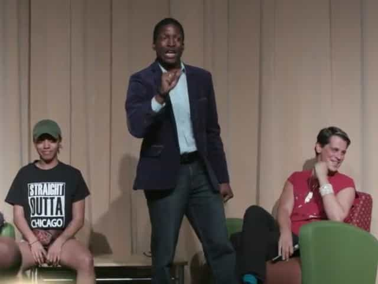

< < < Back
DePaul University President Resigns Due To Fallout From Cancelled Milo Yiannopoulos Speech – Return Of Kings
Earlier this week, DePaul University President Dennis Holtschneider announced that he was stepping down later in the week due to the ongoing fallout from Breitbart’s Milo Yiannopoulos’ cancelled speech at the university last month. In a resignation letter sent to students and faculty, Holtschneider claimed that his retirement was in the works for several months prior and that he is planning to remain at DePaul as a professor:
Please know I am not leaving for another position. While I will remain open to assignments after 2017, my present plan is to return to DePaul in my tenured faculty position following a year away from the institution to give the new president the breathing room he or she deserves.
While supporters of Milo and cultural libertarians may hail Holtschneider’s resignation as a victory, the reality is that he is stepping down not due to pressure from us, but from the radical left hooligans who shut down Milo’s speech. In this, DePaul is going down the same path as the University of Missouri, which capitulated to social justice whiners and subsequently saw its enrollment plummet. DePaul will no doubt see its student body collapse in the coming months.
The Right Move, The Wrong Reasons

To recap, Milo Yiannopoulos was slated to give a speech at DePaul University on May 24th, but barely 15 minutes into the event, the speech was effectively cancelled when a pair of #BlackLivesMatter activists stormed the stage and stole the mics, threatening Milo multiple times in the process. The event’s organizers attempted to call both security and the police, but both were ordered to stand by and do nothing, despite the fact that DePaul had shaken down the organizers for added security fees just prior to the event. (I was at the speech and got attacked by Katie O’Reilly, an SJW student who tried to steal my phone.)
The day after the event, Holtschneider issued a mealy-mouthed apology for what happened, conspicuously avoiding apologizing to Milo, whose speech was disrupted and personal safety threatened by Holtschneider’s actions. In response, angry Milo fans began flooding DePaul’s Facebook page with negative reviews and contacting donors, causing the college’s ratings to collapse. Breitbart and the College Republicans have also been fighting to get the money they were forced to spend on security refunded.
Amazingly, despite the fact that they succeeded in shutting down an event that Milo and the College Republicans had paid for and had every right to hold, DePaul’s leftists still weren’t happy. The DePaul Black Leadership Coalition were incensed by Holtschneider’s apology, offended by the fact that he even allowed the speech to take place. Sociology professor Dr. Shu-Ju Ada Cheng resigned for similar reasons, claiming that free speech is a “delusional” idea “rooted” in “market ideology.” I also discovered that DePaul’s Islamic chaplain Abdul-Malik Ryan is an ISIS supporter with connections to John Walker Lindh.
In response, Holtschneider walked back his apology, pledging to increase funding to groups that were involved in disrupting Milo’s speech. Unfortunately, the first rule of dealing with SJWs is never apologize, and Holtschneider’s attempts at conciliation only made the situation worse. As he resigns, he’s accomplished the truly remarkable feat of pissing off both leftists and conservatives and pleasing no one.
Swirling The Bowl

The DePaul incident is yet another in a recent string of clashes between college students and their administrators, as kids drunk on social justice move further left than their elders are comfortable with. As mentioned above, the chancellor of Mizzou was forced to resign following a series of leftist protests kicked off by a poop swastika supposedly found in a bathroom, with students alleging that the administration wasn’t doing enough to “protect” them. Following the administration acceding to the protesters’ demands, enrollment dropped off a cliff, putting Mizzou’s future in jeopardy.
Similarly, I wouldn’t be surprised if DePaul University sees its enrollment for coming semesters collapse. While leftists are still powerful in many ways, the cultural victories of the past two years—GamerGate, the Trump campaign and the like—have shown that people are sick of social justice warriors. Given his cowardly response to what happened with Milo Yiannopoulos, DePaul deserves to go down, and Dennis Holtschneider deserves to leave in disgrace.
Read More: Black Lives Matter Protesters Shut Down Milo Yiannopoulos’ Speech In Chicago